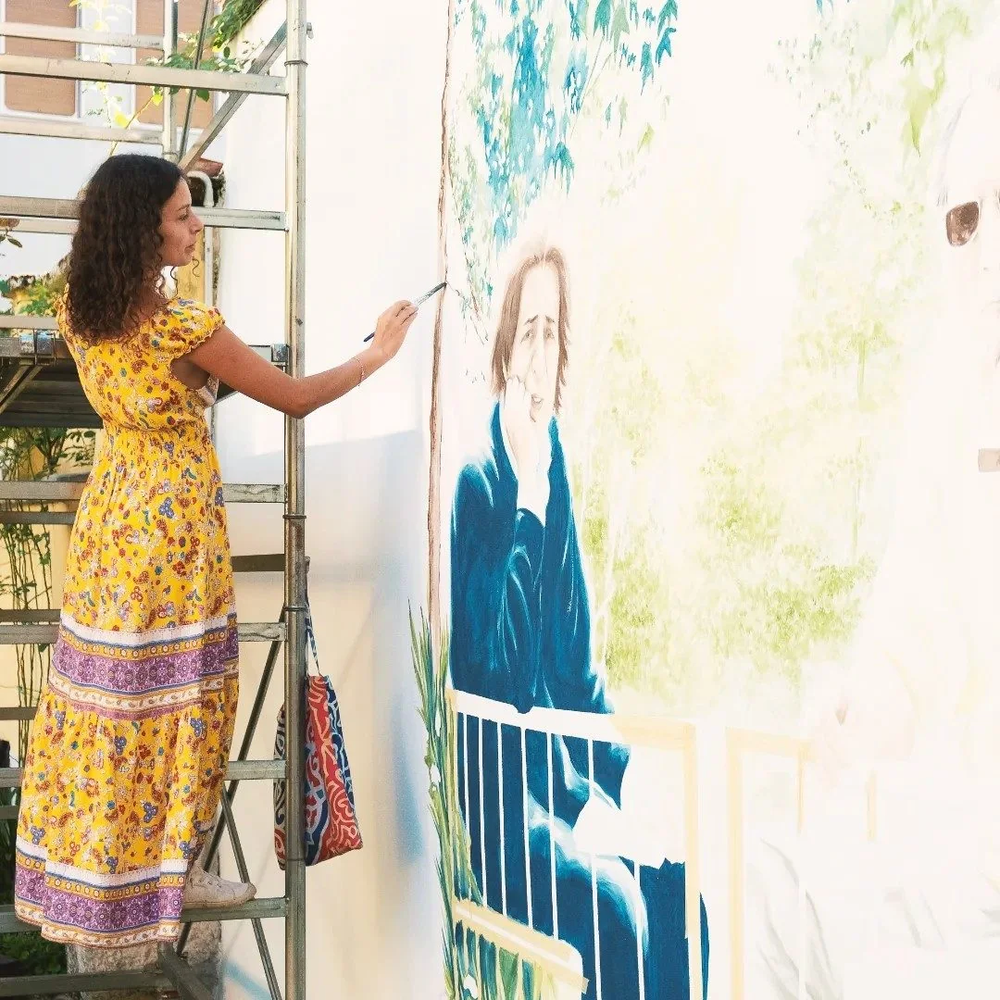

Murales per casa e villa
Per abitazioni, seconde case e interni da vivere ogni giorno con più luce, carattere e presenza.
ScopriMurale a Beausoleil per palazzi, appartamenti, negozi e atri d’ingresso.
Murales a Beausoleil per ville, appartamenti, seconde case e luoghi di charme.
Scrivimi che tipo di spazio hai e la tua idea.
| Motivo semplice, floreale, botanico | 150 € / m² |
|---|---|
| Soggetto dettagliato, figurativo | 250 € / m² |
| Trompe l’oeil, soffitto, finto marmo | 350 € / m² |
| Facciata esterna | 150 € / m² + ponteggio |
Nessun minimo d’ordine. Preventivo gratuito entro 48h, senza impegno.

Beausoleil è addossata a Monaco, in forte pendenza, con palazzi serrati e scalinate pubbliche tra le strade. I muri ciechi e i vani scala sono numerosi e spesso nudi. La domanda arriva soprattutto dai condomini e dai negozi dell'avenue de Villaine, e dagli appartamenti le cui stanze mancano di luce per via del pendio. Giulia si sposta con facilità per dipingere: viene sul posto a vedere il muro, oppure lavora prima su foto e misure.


Case, luoghi d’accoglienza, portfolio e pagine vicine da scoprire.
Per abitazioni, seconde case e interni da vivere ogni giorno con più luce, carattere e presenza.
ScopriPer hospitality, retail e spazi che vogliono una firma pittorica elegante e viva.
Scopri
Per camere, camerette e spazi più intimi che chiedono dolcezza, luce e una pittura viva.
ScopriBeausoleil si lega naturalmente a Saint-Jean-Cap-Ferrat, Monaco, Mentone e alla Costa Azzurra più raffinata.
Murales su misura in Costa Azzurra per case, ville, hotel, ristoranti, boutique e luoghi professionali.
ScopriMurales su misura a Monaco per case, ville, hotel, ristoranti, boutique e luoghi professionali.
ScopriMurales su misura a Roquebrune-Cap-Martin per case, ville, hotel, ristoranti, boutique e luoghi professionali.
ScopriMurales su misura a Nizza per case, ville, hotel, ristoranti, boutique e luoghi professionali.
ScopriMurales su misura a Mentone per case, ville, hotel, ristoranti, boutique e luoghi professionali.
ScopriIl muro di oltre 20 metri per Gaber e Jannacci, a Milano, sulla stampa
Giulia Dal Bon, formata all’Accademia di Belle Arti di Brera, Milano.
Ogni progetto viene quotato su misura. Ecco i formati più richiesti.
Cosa fa variare il preventivo: la superficie da dipingere, la complessità del soggetto, interno o esterno, lo stato del muro prima della preparazione, l'altezza e l'eventuale necessità di un ponteggio, i tempi richiesti e la distanza da Mentone.
Per ricevere un preventivo, invia una foto del muro, le dimensioni approssimative e l'idea che hai in mente.
Superfici: muro interno, facciata esterna, soffitto, vano scala, corridoio, ingresso, cameretta, camera da letto, soggiorno, cucina, bagno, vetrina, serranda, muro di giardino, pannello mobile.
Luoghi: casa, villa, appartamento, seconda casa, hotel, B&B, casa vacanze, ristorante, pizzeria, caffè, bar, gelateria, boutique, negozio, parrucchiere, spa, palestra, studio medico, sala d'attesa, asilo, ufficio, showroom, cantina.
Soggetti possibili: paesaggio, motivo floreale e botanico, cielo su soffitto, trompe l'oeil prospettico, figure, animali, finto marmo e finto legno, lettering e insegne dipinte, riproduzione di un'opera.
Murales su commissione, dipinti murali, decorazione pareti, pittura murale, decorazione murale, trompe l'oeil, affresco, pareti dipinte a mano, disegni su muro: sono nomi diversi per lo stesso lavoro a Murales a Beausoleil. Giulia dipinge a mano con colori acrilici atossici e traspiranti, su interni ed esterni, senza stampa e senza carta da parati.
La domanda arriva soprattutto dai condomini, dai negozi di quartiere dell'avenue de Villaine e dagli appartamenti le cui stanze mancano di luce per via del pendio.
Giulia si sposta anche a Monaco, Mentone, Roquebrune-Cap-Martin, Nizza.
I formati più richiesti sono indicati sopra, a partire da 450 €. Un piccolo murale in una camera costa meno di una facciata che richiede preparazione e ponteggio. Il preventivo è gratuito e senza impegno.
Un muro semplice richiede due o tre giornate di pittura. Una stanza intera o un soggetto molto dettagliato richiede circa una settimana. Si aggiungono alcuni giorni per il bozzetto e l'approvazione.
Sì, con una preparazione del supporto e pitture pensate per l'esterno. Esposizione sud e aria marina, come a Monaco. Un esterno richiede un primer antisale e, per un muro visibile dalla strada, una comunicazione al comune.
Per un muro interno no. Per una facciata visibile dalla strada serve in genere l'accordo del proprietario o del condominio, e una comunicazione al comune se l'edificio è in zona vincolata. Giulia indica la procedura prima di iniziare.
Sì. Un murale dipinto ad acrilico si ricopre come una normale pittura murale. Può anche essere ripreso o ampliato in seguito.